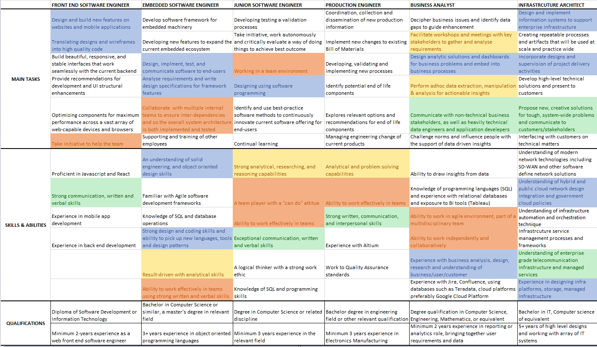

|
Of six members in our team, three suggested becoming a software engineer as their ideal job. In the software engineer role, the main tasks that appeared across the three roles involved designing and developing (highlighted in blue), which were also present in the Infrastructure Architect role.
All job listings mentioned the need to work effectively in teams (highlighted in orange), except for the Infrastructure Architect role, which did not specify so. However, one of the requirements listed in the Infrastructure Architect role was to execute innovative projects that would have to be communicated to customers/stakeholders.
Strong communication (highlighted in green), verbal, and written skills were requirements across all ideal jobs. Analytical skills (highlighted in yellow) were also consistent across the majority of the ideal jobs, including the software engineer and business analyst roles. On the other hand, front end software engineers mostly required experience while infrastructure architects mostly required understanding in certain technologies.
The business analyst role mostly required identifying business issues and data gaps to provide insights. It was also the only role that designs analytic solutions rather than systems and software.
|

|